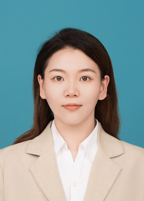

Yunbi Liu

Lecturer
School of Computer Science
Nanjing University of Posts and Telecommunications (NJUPT)
Email: ybliu [at] njupt.edu.cn
I am currently a Lecturer at the School of Computer Science at Nanjing University of Posts and Telecommunications. Before this, I obtained my Ph.D. degree from Southern Medical University (SMU) in June 2021, advised by Prof. Wei Yang.
From September 2021 to September 2023, I worked as a postdoctoral fellow at the Chinese University of Hong Kong (shenzhen) for two years, advised by Prof. Xiaoguang Han.
My research interests include Medical Image Synthesis, Image-guided Radiography / Intervention, and Vascular Disease Analysis.
Publication
First / Corresponding author
- Bone suppression of lateral chest x-rays with imperfect and limited dual-energy subtraction images
Yunbi Liu, Fengxia Zeng, Mengwei Ma, Bowen Zheng, Zhaoqiang Yun, Genggeng Qin, Wei Yang, Qianjin Feng
Computerized Medical Imaging and Graphics (CMIG). 105 (2023): 102186.
- A hybrid propagation network for interactive volumetric image segmentation
Luyue Shi, Xuanye Zhang, Yunbi Liu (Co-corresponding), Xiaoguang Han
International Conference on Medical Image Computing and Computer-Assisted Intervention (MICCAI). pp.673-682 (2022).
- Assessing clinical progression from subjective cognitive decline to mild cognitive impairment with incomplete multi-modal neuroimages
Yunbi Liu, Ling Yue, Shifu Xiao, Wei Yang, Dinggang Shen, Mingxia Liu
Medical Image Analysis (MIA). 75 (2022): 102266.
- Improving Tuberculosis Recognition on Bone-Suppressed Chest X-Rays Guided by Task-Specific Features
Yunbi Liu, Genggeng Qin, Yun Liu, Mingxia Liu, Wei Yang
Predictive Intelligence in Medicine: 4th International Workshop, PRIME 2021, Held in Conjunction with MICCAI 2021. pp. 59-69 (2021).
- Joint neuroimage synthesis and representation learning for conversion prediction of subjective cognitive decline
Yunbi Liu (Co-first), Yongsheng Pan, Wei Yang, Zhenyuan Ning, Ling Yue, Mingxia Liu, Dinggang Shen
International Conference on Medical Image Computing and Computer-Assisted Intervention (MICCAI). pp.583-592 (2020).
- Generating dual-energy subtraction soft-tissue images from chest radiographs via bone edge-guided GAN
Yunbi Liu, Ling Yue, Shifu Xiao, Wei Yang, Dinggang Shen, Mingxia Liu
International Conference on Medical Image Computing and Computer-Assisted Intervention (MICCAI). pp.678-687 (2020).
- Automatic delineation of ribs and clavicles in chest radiographs using fully convolutional DenseNets
Yunbi Liu, Xiao Zhang, Guangwei Cai, Yingyin Chen, Zhaoqiang Yun, Qianjin Feng, Wei Yang
Computer Methods and Programs in Biomedicine (CMPB). 180 (2019): 105014.
- Yichen Dai (戴熠辰), 2024 - present
- Jiaxin Jiang (蒋嘉欣), 2024 - present
-->